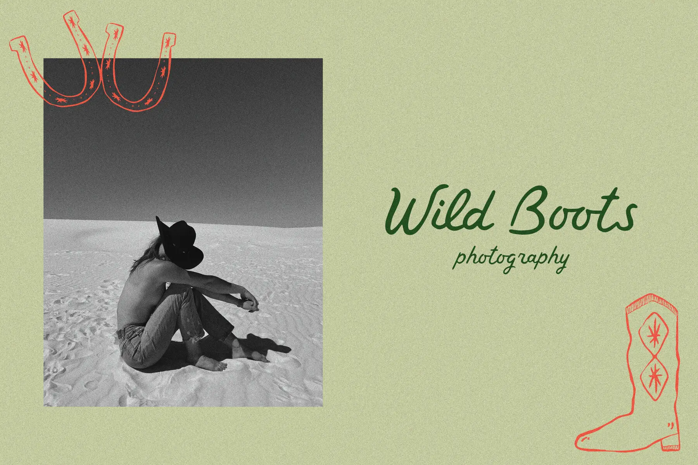

The portrait's horizon starts the lower photo crop; its dark sky remains separate. The horseshoes print over the image edge, while the title stays clear in the open sage field.
Salt-flat portrait, overprinted horseshoes, and a complete engraved boot on sage stock.

The portrait's horizon starts the lower photo crop; its dark sky remains separate. The horseshoes print over the image edge, while the title stays clear in the open sage field.